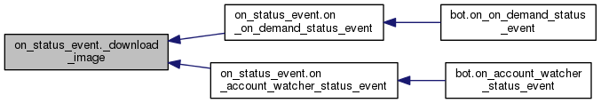
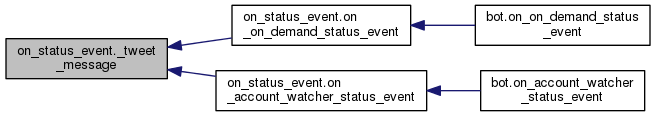
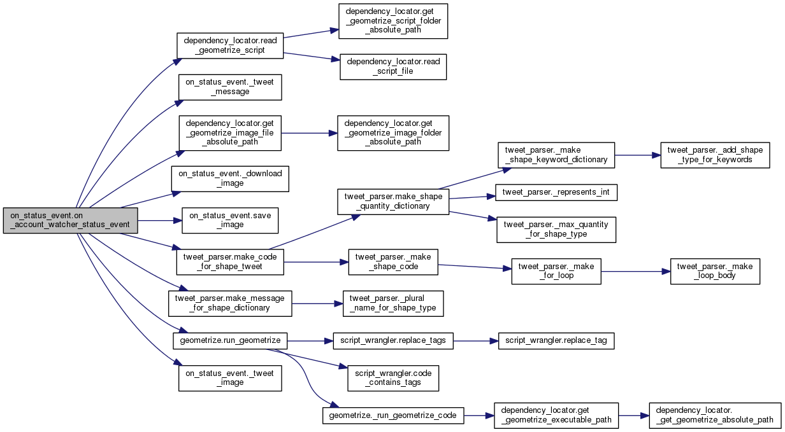
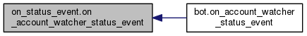
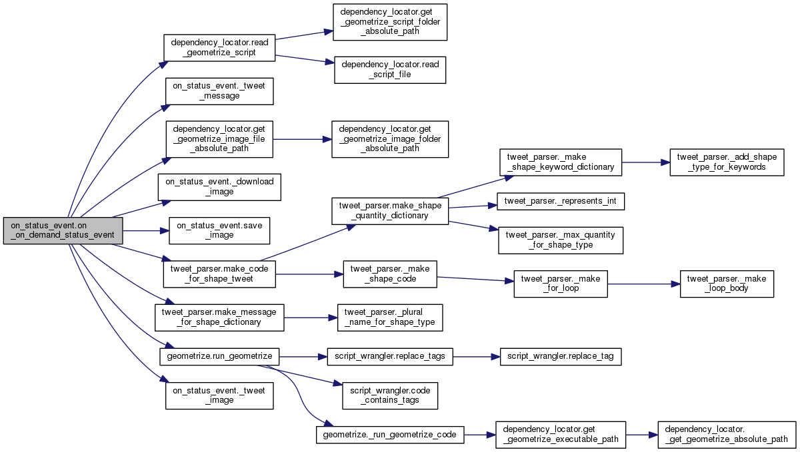
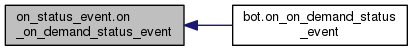
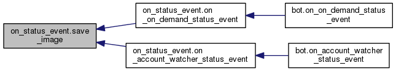

|
GeometrizeTwitterBot
1.0
Python Twitter bot for geometrizing images into geometric primitives
|
|
GeometrizeTwitterBot
1.0
Python Twitter bot for geometrizing images into geometric primitives
|
Module containing the code that the bot runs when it receives a status event. More...
Functions | |
| def | load_image |
| Loads an image from the given filepath, returns the loaded image, or None if the loading failed. More... | |
| def | save_image |
| Saves an image to the given filepath, returns true on success, false on failure. More... | |
| def | _download_image |
| Downloads an image from a tweet. More... | |
| def | _tweet_image |
| Tweets an image. More... | |
| def | _tweet_message |
| Tweets a simple message. More... | |
| def | on_on_demand_status_event |
| Handles a status change event from the Twitter streaming API. More... | |
| def | on_account_watcher_status_event |
| Handles a status change event from the Twitter streaming API. More... | |
Module containing the code that the bot runs when it receives a status event.
This is where most of the work is triggered e.g. the bot receives a Tweet, it parses the tweet, and figures out how to respond.
|
private |
Downloads an image from a tweet.
Returns the request content if it succeeds, else None.

|
private |
Tweets an image.
|
private |
Tweets a simple message.

| def on_status_event.load_image | ( | filepath | ) |
Loads an image from the given filepath, returns the loaded image, or None if the loading failed.
| def on_status_event.on_account_watcher_status_event | ( | api, | |
| status | |||
| ) |
Handles a status change event from the Twitter streaming API.
This means waiting for status updates and doing things to response to them.


| def on_status_event.on_on_demand_status_event | ( | api, | |
| status | |||
| ) |
Handles a status change event from the Twitter streaming API.
This means waiting for status updates and doing things to response to them.


| def on_status_event.save_image | ( | image, | |
| filepath | |||
| ) |
Saves an image to the given filepath, returns true on success, false on failure.

 1.8.6
1.8.6